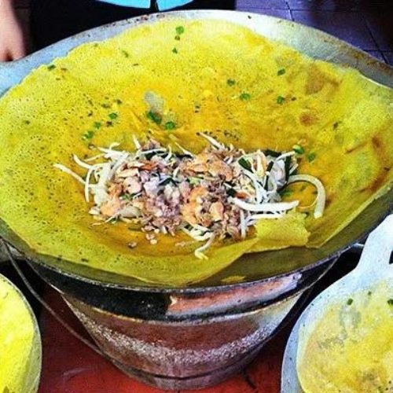

Cách làm bánh xèo ngon Miền Nam
Thời gian: 60 phút
Đầu tiên, bạn cho bột gạo vào thau hay thố sạch, sau đó thêm nước cốt dừa, bột nghệ và trứng vịt
vào rồi đánh tan đều. Tiếp tục cho thêm hành lá vào chung.
Thịt ba chỉ rửa sạch, thái lát mỏng. Tôm rửa sạch, cắt bỏ râu ria, đuôi. Sau đó cho thịt và tôm
trộn với tiêu xay, bột ngọt và chút muối để ướp. Giá và rau sống rửa sạch để ráo. Đậu xanh cà vỏ
ngâm nước ấm trong 2 tiếng, hấp chín